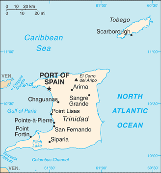

Wheaton College Computer Science Club
Our Members > Nate Hunt
About Me:
I am a double major in music and computer science and I am also one of the 3 founders of this club. My favorite part of being a CS major is having the ability to make projects such as this website. This is also the first website I have ever made...
I really enjoy music, especially alternative and rock. Check out my band here.
I have been in the Wheaton Wind Symphony, Orchestra, Jazz Band, Phat Police and Lymin' Lyons during my time here as a drummer/percussionist.
I drive one of these:
Places I've Been
- Hawaii (twice)
- Ireland
- Trinidad and Tobago 

Computer Skills
- Languages
- C/C++, Python, Java, HTML, CSS, Bash
- Operating Systems
- Windows, Linux
Important Things I've Done
Well I casually programmed a robot to know where it was in a maze, whether it was in a corner or a straightaway.